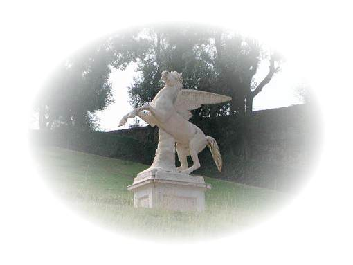

Listen to 'Abysmal garden' in English

XIV JARDIN EN ABÎME
Parfums, convulsions et repos. Hagards
Bras tâtonnant vers le refuge de bras qu'
Outre l'écorce avance une attente et craque
Pour en brasier éployer l'essaim de dards.
Ici nul feu. Le désir est seul regard
Et les chasseurs aux outre-voix qui te traquent.
Savoir la nuit! Chemins qui tressent, qui raquent.
Si, plus profond le dieu qui veille en toi, car
Règnent le nard, l'aconit et la pervenche
Sur leurs matins ton hôte veut la revanche
Quand la racine est le calice du vent.
Houles, limons et noirceurs musiciennes.
Deviens ce dieu rebelle qui fasse sienne
Une clarté montant des gouffres du sang.
1er mai 1992
Copyright Michel Galiana 01.04.2006 (c) (r) All rights reserved
Transl. Christian Souchon 01.04.2006 (c) (r) All rights reservedXIV ABYSMAL GARDEN Perfumes are convulsions and repose: Restless arms That grope, seeking refuge in arms protruding from The bark, impatiently, crunching and crackling on A pyre, when they spread to a fan their darts in swarms. This is a fireless pyre. Desire is the sole glance. There where no voice reaches, the hunters track you down. The interwoven paths of the night must be known To the god hid in you, possessed by vigilance, For iris, aconite and periwinkle reign On whose mornings your host wants his revenge to gain, Once the root has become for the wind a chalice Full of these swells of silt and musical darkness. Be this rebellious god that you may have access To the brightness rising from your own blood's abyss! May 1st 1992
Note :
| Ce poème est aux parfums d'un jardin ce qu' Ineffable beauté est aux couleurs du ciel au soleil couchant. Il contraint les mots à exprimer l'ineffable. | This poem is to the scents of a garden what Ineffable beauty is to the colours of the sky at setting sun. It forces words to express the ineffable. |
Listen to 'Abysmal garden' in English